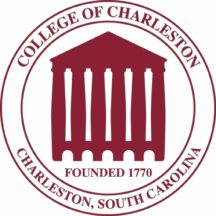
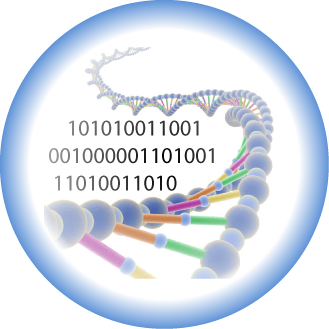

Learn2Mine is a project created by students Jake Dierksheide and Clayton Turner of the College of Charleston, under the guidance of Dr. Paul Anderson.

Learn2Mine is part of a series of projects by the Bioinformatics Research Group (BiRG), started by Dr. Paul Anderson. For more information, visit The BiRG Website
"Somewhere, something incredible is waiting to be known" -Dr. Carl Sagan
Galaxy is an open, web-based platform for data intensive biomedical research. The Galaxy team is a part of BX at Penn State, and the Biology and Mathematics and Computer Science departments at Emory University. The Galaxy Project is supported in part by NHGRI, NSF, The Huck Institutes of the Life Sciences, The Institute for CyberScience at Penn State, and Emory University.